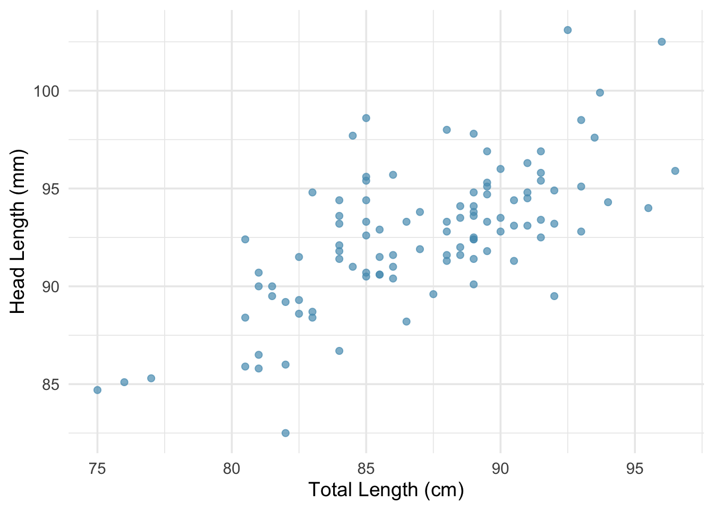
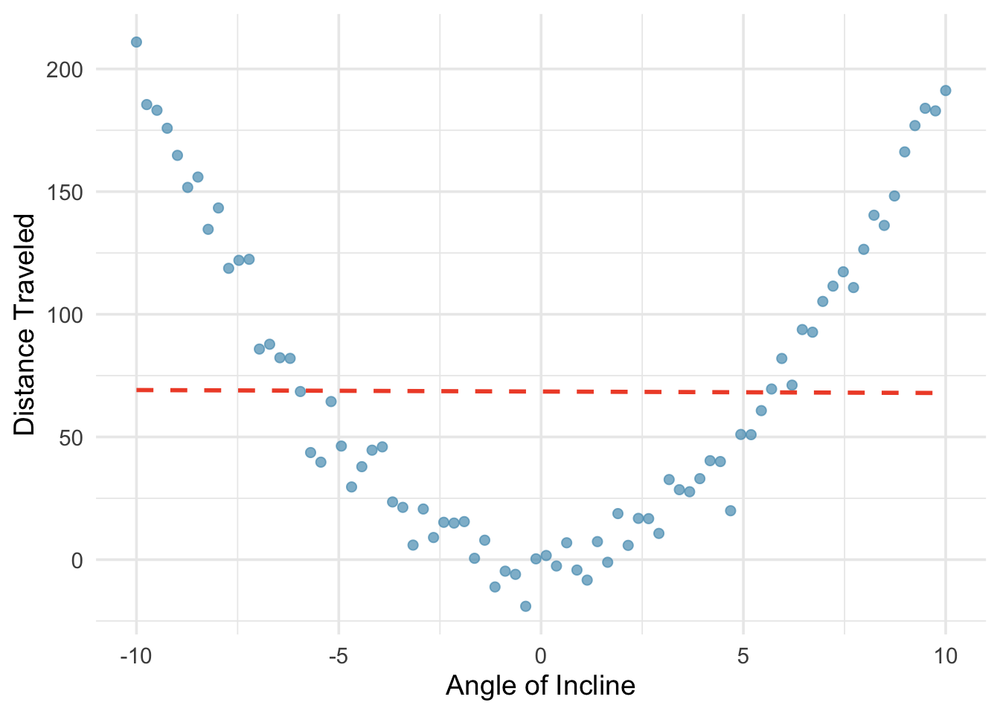
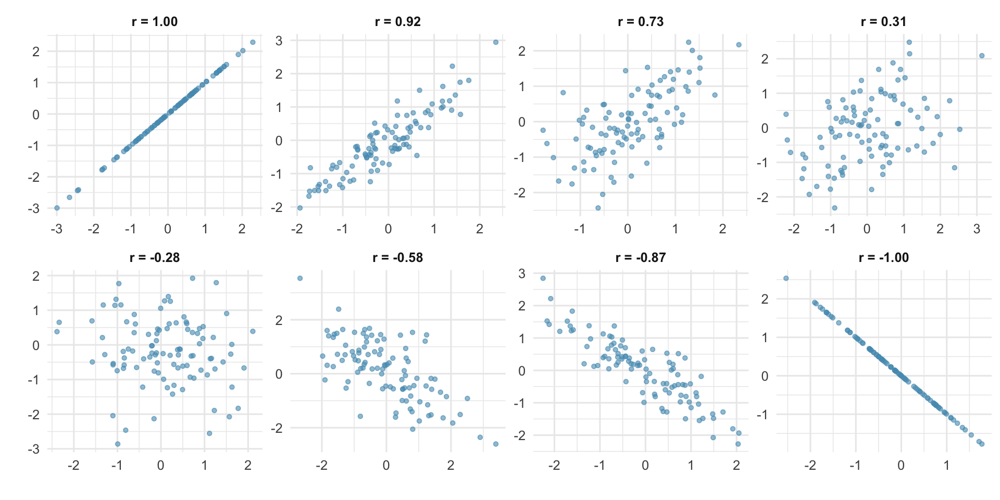
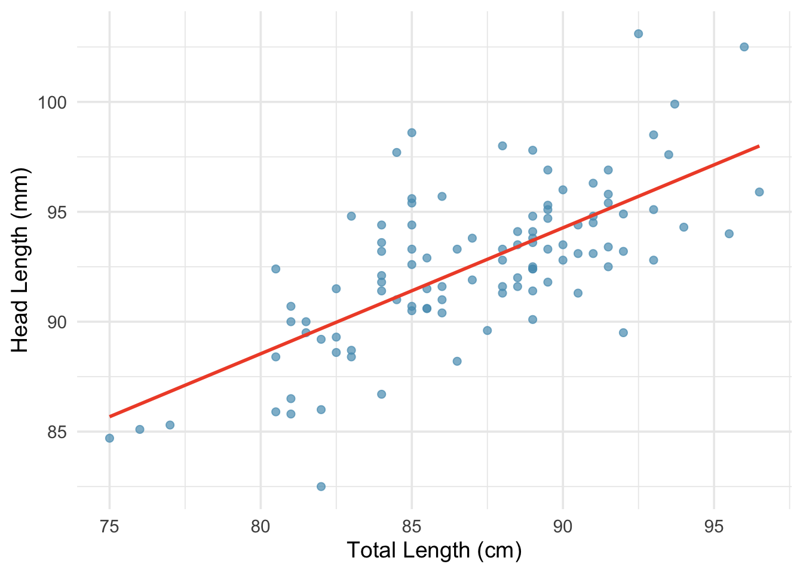
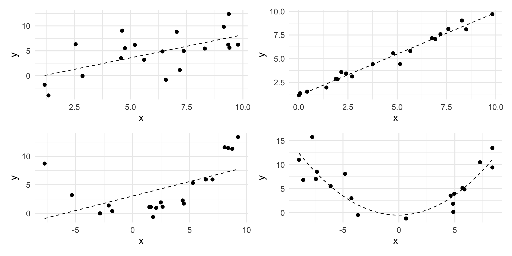

4.4 Correlation and Linear Regression
When we have two quantitative variables, we often want to understand the relationship between them. Does one variable increase as the other increases? Does it decrease? Or is there no apparent pattern? In this chapter, we introduce tools for visualizing and quantifying the strength and direction of the linear relationship between two quantitative variables and how to model the relationship. We introduce the correlation coefficient \(r\), discuss its properties and limitations, and address the ever-important distinction between correlation and causation. We continue to build on the ideas of correlation to develop the least squares regression line via linear regression. We learn how to interpret the slope and intercept, use residuals to assess model fit, quantify the strength of the model with \(R^2\), and perform inference on the slope to test whether a linear relationship exists in the population.
Key Concepts
- Use the linear correlation coefficient, \(r\), to quantify the strength and direction of a linear relationship
- Identify when the correlation coefficient can capture the trend between two quantitative variables
- Recognize that correlation does not equal causation
- Use computer output to make predictions and interpret coefficients using a fitted simple linear model
- Construct a confidence interval for the slope in a regression model
- Test a hypothesis about the slope of a regression model
- Test for evidence of a linear association between two quantitative variables using a sample correlation
- Compute and interpret the value of \(R^2\) for a regression model
- Check a scatterplot for obvious departures from a simple linear model
Scatterplots
A scatterplot is a graph of the relationship between two quantitative variables
In Unit 1, we saw that we can visualize the relationship between two quantitative variables with scatterplots.
When examining a scatterplot, we look for four key features:
- Direction: Is the relationship positive (upward trend), negative (downward trend), or neither?
- Form: Is the relationship linear (points cluster around a line) or nonlinear (points follow a curve)?
- Strength: How tightly do the points cluster around the trend? A strong relationship has little scatter; a weak relationship has lots of scatter.
- Unusual observations: Are there any outliers that deviate from the overall pattern?
Class Example 4.4.1: Describing Relationships
Researchers captured 104 brushtail possums in Australia and took body measurements before releasing them. Consider the relationship between total body length (cm) and head length (mm).
Describe the relationship between total length and head length.
However, there are cases where fitting a straight line to the data is not helpful, even if there is a clear relationship between the variables.

When the relationship is nonlinear, fitting a straight line can be misleading. We must always examine scatterplots before computing correlations or fitting linear models.
The linear correlation coefficient
The correlation coefficient, denoted \(r\), quantifies the strength and direction of a linear relationship.
The formula for the correlation coefficient is:
\[r = \frac{1}{n-1} \sum_{i=1}^{n} \frac{x_i - \bar{x}}{s_x} \cdot \frac{y_i - \bar{y}}{s_y}\]
where \(\bar{x}\) and \(\bar{y}\) are the sample means, and \(s_x\) and \(s_y\) are the sample standard deviations for each variable. In practice, we always use a computer or calculator to compute \(r\).
The correlation coefficient has several important properties:
- Range: \(-1 \le r \le 1\).
- Unitless: Correlation has no units. Changing the units of \(x\) or \(y\) (e.g., from cm to inches) does not change \(r\).
- Symmetric: The correlation of \(x\) with \(y\) is the same as the correlation of \(y\) with \(x\).
- Not affected by linear transformations: Adding a constant to or multiplying a variable by a positive constant does not change \(r\).
- Only measures linear relationships: Correlation can be misleading for nonlinear relationships.

Key patterns to notice:
- When \(r = 1\) or \(r = -1\), all points fall exactly on a straight line (a perfect linear relationship).
- When \(r\) is close to \(+1\) or \(-1\), the relationship is strong and linear.
- When \(r\) is close to 0, there is no linear relationship (but there could still be a nonlinear relationship!).
- Positive \(r\) means both variables tend to increase together; negative \(r\) means one tends to decrease as the other increases.
Important Note
Correlation does not imply causation. Just because two variables are correlated does not mean that one causes the other. There may be a confounding variable (also called a lurking variable) that is associated with both \(x\) and \(y\), creating a correlation between them even though there is no direct causal link.
Class Example 4.4.2: Firefighters and Damage
Studies have found a positive correlation between the number of firefighters sent to a fire and the amount of damage the fire causes. Does this mean sending more firefighters causes more damage?
Linear Regression
Notation:
- \(\beta_0\): population intercept
- \(\beta_1\): population slope
- \(\varepsilon\): random error
- \(\widehat{y}\): predicted value
- \(b_0\): intercept estimate
- \(b_1\): slope estimate
Linear regression is the statistical method for modeling a linear relationship between two variables, \(x\) and \(y\). It is rare for all of the data to fall perfectly on a straight line. Instead, it’s more common for the data to appear a a cloud of points. Thus, to have a population linear model, we must include an error term:
\[y = \beta_0 + \beta_1 x + \varepsilon.\]
The values \(\beta_0\) and \(\beta_1\) represent the model’s population intercept and population slope, respectively, and the error is represented by \(\varepsilon\). If we collect data from a random sample from a target population, we can estimate \(\beta_0\) and \(\beta_1\) with \(b_0\) and \(b_1\), the sample intercept and sample slope, respectively:
\[\widehat{y} = b_0 + b_1 x.\]
The “hat” on \(y\) signifies that this is a predicted (estimated) value.
When we use \(x\) to predict \(y\), we call \(x\) the predictor variable (or explanatory variable) and \(y\) the outcome variable (or response variable). he slope, \(b_1\), represents the average predicted change in the response variable,\(y\), given a one unit increase in the explanatory variable, \(x\). The intercept, \(b_0\), represents the predicted value of the response variable, \(y\), if the explanatory variable, \(x\) is zero. The equation for the intercept and slope are given as
\[ b_1 = r \frac{ s_y }{ s_x } \qquad b_0 = \overline{y} - b_1 \overline{x}. \]
The slope and correlation coefficient should always have the same sign
One thing to notes from this formula is that the slope and correlation should always have the same sign.
Class Example 4.4.3: Possums
Researchers captured 104 brushtail possums in Australia and took body measurements. We consider total body length (cm) as the predictor to predict head length (mm). Some summary statistics and a scatterplot of the data are given below
| Variable | Average | Std. Dev. |
|---|---|---|
| Body Length | \(87.09\) | \(4.31\) |
| Head Length | \(92.60\) | \(3.57\) |
| \(r = .691\) |

- Looking at the plot, would you categorize the correlation as positive or negative? Strong, moderate, or weak?
- Use the summaries to find estimates for the slope and intercept for the regression line. Record your answer in the form \(\widehat{y} = b_0 + b_1x\).
Interpreting Slope and Intercept
For the regression line \(\widehat{y} = b_0 + b_1x\):
The slope, \(b_1\), is interpreted as the predicted change in the response variable \(y\) for a one unit increase in the explanatory variable.
The intercept, \(b_0\), is interpreted as the predicted value of \(y\) when \(x = 0\). In some situations it may not make sense to have \(x = 0\) (a person’s height, for example), and in these cases, we do not interpret \(b_0\).
Residuals
A residual is the difference between an observed values and a predicted value of a response
The least squares line is the equation that has the smallest sum of squared residuals
A residual (or error) is the difference between an observed value of \(y\) and the predicted value of \(y\) at an observed value of \(X\):
\[ \text{Residual} = \text{Observed} - \text{Predicted} = y - \widehat{y} \]
Visually, this is the vertical distance between and the regression line. We say that the line that fits the data best is the least squares line, which minimizes the sum of the squared residuals.
Regression Cautions
- While we can predict \(y\) by plugging an \(x\) in the least squares regression line, we should try to avoid predicting for \(x\) value outside the range of the data collected (called extrapolation). This is because the fit of the line may no longer hold for values outside the range of collected data.
- While we can find the best fitting line for any data set, we should first plot the data to ensure a linear fit is appropriate.
- Outliers can have strong influence on the regression line, just as we saw for correlation.
Class Example 4.4.4: Possums, revisited Consider the previous example.
- Predict the head length of a possum whose body length is 90mm. Is this prediction extrapolation?
- One of the possums had a body length of 83mm and a head length of 88.4mm. Find the predicted value and residual for this possum.
- Provide an interpretation of the slope and intercept (if reasonable) in the context of this problem.
Inference for Slopes
As with means and proportions, the regression coefficients,\(b_0\) and \(b_1\), are statistics and are estimates of the population intercept, \(\beta_0\), and population slope, \(\beta_1\). Most of the time, we will not be interested in inference for \(\beta_0\), so the rest of the lecture on regression will focus on inference for the population slope \(\beta_1\). To conduct a hypothesis test for the slope, we will be testing
\[ H_0{:} \hspace{.5em} \beta_1 = 0 \qquad \qquad H_A{:} \hspace{.5em} \begin{aligned} \beta_1 &< 0\\ \beta_1 &> 0\\ \beta_1 &\neq 0 \end{aligned} \]
What do each of these alternative hypotheses represent in words?
As with all statistics, we need to report a standard error in order to determine if our findings are significant. This will be provided to you with software output, so you do not need to worry about calculating this on your own. However, you will need to know how to find the test statistic in order to find a \(p\)-value. For a hypothesis test about a slope, we use the test statistic
SE\(_{b_1}\) is the standard error of \(b_1\)
\[ t = \frac{ b_1 - 0 }{ \text{SE}_{b_1} } \]
where SE\(_{b_1}\) stands for standard error of \(b_1\). To find a \(p\)-value, you should use a \(t\)-distribution with \(n-2\) degrees of freedom. The remaining steps of the hypothesis test are the same as all other hypothesis tests. The table below shows output that is typically given by software when conducting linear regression.
| Coefficients | Estimate | Std. Error | \(t\) |
|---|---|---|---|
| (Intercept) | \(b_0\) | SE\(_{b_0}\) | \(t\) for \(b_0\) |
| Explanatory Variable | \(b_1\) | SE\(_{b_1}\) | \(t\) for \(b_1\) |
We can also construct a confidence interval for the population slope, \(\beta_1\), using the following with \(n-2\) degrees of freedom.
\[ b_1 \pm t^*_{n-2}\text{SE}_{b_1} \]
Class Example 4.4.5: Possums continued
The table below gives the output from results for a simple linear regression of possum head length. Use the output to conduct a hypothesis test to see if there is some linear relationship between the average body length and average head length of possums, using \(\alpha = 0.05\). Compute a 95% confidence interval for \(\beta_1\). Does the results of the confidence interval match the results of the hypothesis test?
| Coefficients | Estimate | Std. Error | \(t\) |
|---|---|---|---|
| (Intercept) | 42.71 | 5.17 | 8.257 |
| Length | 0.57 | 0.06 | ? |
Conditions for inference
For the mathematical inference to be valid, we check four conditions, often remembered by the LINE mnemonic:
- L – Linear model The data should show a linear trend. Check the scatterplot and residual plot.
- I – Independent observations: Be cautious with time series data or clustered observations.
- N – Nearly normal residuals: Residuals should be approximately normally distributed. This is less critical for large samples (Central Limit Theorem), but outliers are always a concern.
- E – Equal variability: The variability of points around the line should be roughly constant across all values of \(x\). A deviation from this look like more of a fan or megaphone shape.
We can check conditions 1, 3, and 4 using a scatterplot of the data. Condition 2 can be checked using a histogram of residuals.
Coefficient of determination, \(R^2\)
\(R^2\) gives the percentage of variation in the response variable that we can explain with the explanatory variable
There is another statistic from regression that is often used to compare two simple linear regressions models with each other. The coefficient of determination, notated \(R^2\), gives the percentage (or proportion) of variation in the response variable that we can explain by the linear regression using the explanatory variable. Because we hope the explanatory variable and fitted model do a good job in explaining the response, a higher \(R^2\) is desired.
When fitting a simple linear regression model, we can get the coefficient of determination by squaring the correlation, \(r\).
A more general idea of how \(R^2\) is computed will be discussed in the next chapter, but if we are fitting a simple linear model, we can find the coefficient of determination, \(R^2\), by squaring the correlation coefficient, \(r\). Therefore, \(0 \leq R^2 < \leq 1\). Values closer to 1 suggest a higher percentage of variation that is being explained. What if we are not interested in a linear model but some sort of curve instead? Then we know that the correlation \(r\) does not tell us about the adequacy of the fitted curve since it only describes a linear relationship. However, the coefficient of determination \(R^2\) can tell us how well a curve fits. This makes it more general in purpose than correlation.
Class Example 4.4.6: Investigating the coefficient of determination
Match each of the following scatterplots below (each displays the fitted model as the dashed line/curve) to one of the following values of coefficient of determination: \(R^2 = .98\), \(R^2 = .80\), \(R^2 = .37\), or \(R^2 = .001\)

Class Example 4.4.7: \(R^2\) for the Possum data
If the correlation coefficient for the simple linear regression model relating the body length and head length of possums is 0.691, find and interpret the coefficient of determination, \(R^2\).
Class Example 4.4.8: Possum data, revisited
In the previous examples, we use the variable body length to predict head length. Now, we are going to use body length to predict skull width. The following table give the output from a simple linear regression model of skull width with body length.
| Coefficients | Estimate | Std. Error | \(t\) | \(p\)-value (2-sided) |
|---|---|---|---|---|
| (Intercept) | 23.77 | 5.30 | 4.48 | <0.0001 |
| Length | 0.38 | 0.06 | ? | <0.001 |
| \(r = 0.526\) |
- Using the output above, write the regression equation in the form \(\widehat{y} = b_0 + b_1 x\). Use it to find the predicted and residual value for a possum with a length of 80.5mm and a skull width of 56mm.
- Interpret the slope of the line in the context of the problem.
- Conduct a hypothesis test to see if there is a significant positive relationship between length and skull width. Use \(\alpha = 0.05.\)
- Find \(R^2\) for this linear fit. Do body length explain head length or skull width better? Explain.